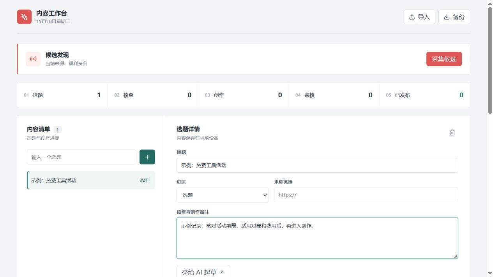

项目案例 · 本地工具 · 持续迭代
RedAuto
小红书内容工作台
从选题发现、信息核查到图文创作和发布复盘，把分散的内容工作整理为一条可追踪、有人把关的流程。
我的角色产品设计 · 流程搭建 · AI 协作开发
使用方式本地浏览器
内容实验科技与软件福利

工作台实际界面，使用示例数据记录于 2026.11 · 迭代中的版本
01 / 工作流程
让每一次发布都有据可查
把内容生产拆成可复核的步骤，效率交给工具，事实判断和最终发布交给人。
01
发现选题
收集公开来源，整理待核查的候选信息。
02
核查与创作
检查有效期、适用条件和风险，辅助生成草稿与卡片。
03
确认发布
逐条核对正文、图片和来源后，再提交小红书。
04
记录复盘
记录可获取的互动数据和改进方向，缺失数据不当作零。
02 / 我的实践
从想法到可使用的流程
以个人内容创作为场景，结合现有开源工具和 AI 辅助开发，逐步把需求变成可运行的本地工作台。
产品与流程设计
梳理选题、核查、草稿、审核、发布与复盘的顺序，把人工确认和来源记录作为流程节点。
本地工作台改造
围绕浏览器使用场景调整界面，接入本地桥接服务，支持候选采集、AI 起草和多图发布。
内容制作与迭代
尝试使用设计 skill 制作图文卡片，根据实际反馈调整文案语气、审核信息和发布体验。
风险控制
发布前保留人工确认；本地服务绑定回环地址并使用访问令牌，不将账号凭证放入展示仓库。
03 / 进展与边界
已经跑通，也保留改进空间
发布测试
已完成多条人工确认后的发布测试，发布回执和账号作品列表曾核对。
自动化辅助
定时任务负责准备候选和草稿，不自动替代事实核查与发布确认。
持续完善
采集来源、文案自然度、图片表现和发布后的数据复盘仍在优化。
本页展示的是项目实践，不是可直接在线使用的产品。未使用虚构的增长、效率或商业成果数据。
04 / 来源说明
在现有工具上继续构建
项目基于 Beav 的可供非商业使用的源码进行学习和改造；小红书发布能力使用独立的第三方 xiaohongshu-mcp，图文卡片参考 guizang-social-card-skill。本页只展示本人完成的产品设计、流程整合和迭代实践，不代表上述工具均由本人原创。相关代码和素材分别适用其许可证与使用条款。